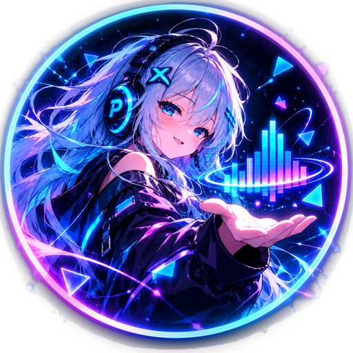
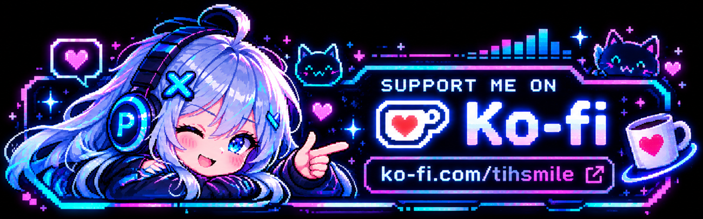

LIVE PREVIEW
Предпросмотр
16:9PREVIEW
Твой первый визуализаторЗагрузи трек и обложку в мастере

Загрузи трек, выбери стиль и собери клип. Всё остаётся на твоём компьютере.
MP3, WAV, FLAC, OGG, M4A и другие форматы, поддерживаемые декодером.
Звёзды пролетают из верхних углов и исчезают на середине пути. Кликни по ним, пока они видны.
Вероятность золотой звезды: 45%. Звуки можно отключить в системе.
Поймай звёзды до середины их пути.
Выдели 10–30 секунд из песни. 15 секунд или больше рекомендуются, но не обязательны. Интро, визуал и аутро входят в выбранную длительность.
Настрой язык и отображение. Эти параметры не изменяют готовый клип и не затрагивают монтаж.
Язык и тема сохраняются на этом устройстве и применяются к интерфейсу. Параметры проекта и экспорт остаются неизменными.
Отдельный видеоредактор: собирай эдит, настрой переходы и просмотри исходные кадры без обложки и визуализатора.
Покадровый рендер H.264 + AAC. Для этой функции требуется Electron и установленный FFmpeg.
D:\ffmpeg\bin\ffmpeg.exe).Анонс использует выбранный таймкод песни также для видеонарезок. Для фона есть отдельное приближение и сдвиг, которые не смещают обложку или надписи. Часть новых ударных FX вдохновлена предоставленными пользователем примерами, но не содержит чужих видео. Переходы старых проектов не перенастраиваются.
Для ускоренного экспорта доступен промежуточный JPEG 98%; если требуется передача кадров без потерь, выбери PNG. Скорость зависит от декодирования видео, процессора и настроек FFmpeg.
Открой вкладку «Анонс». Выбери музыкальный фрагмент от 10 до 30 секунд (рекомендуется от 15 секунд), настрой короткое интро, аутро с датой релиза или надписью «СКОРО». Выбирай моменты основной сцены на шкале времени и по желанию добавляй FX. Интро и аутро входят в ограничение по длине. Экспорт анонса всегда вертикальный 9:16 и не меняет формат полного проекта.
Пробел Play/Pause · Ctrl+B нарезка в монтаже · C копировать клип · V вставить клип · Ctrl+S сохранить · Ctrl+Z отменить · ←/→ покадровая перемотка. В текстовых полях C и V не перехватываются.
Минимально: двухъядерный CPU, 4 ГБ ОЗУ, 1 ГБ свободного места, рабочий драйвер графики. Рекомендуется: современный 4–6-ядерный CPU, от 8–16 ГБ ОЗУ, SSD и аппаратное ускорение видео. Несколько MP4 одновременно гораздо требовательнее статичных фонов. Для слабого ПК выбери Low / 24 FPS для предпросмотра, экспорт оставь в 1080p.
Конечно, и на 4 гигах ОЗУ потянет, но с Пентиумом... соболезную... (пособолезнуйте мне тоже).
Начни с буквы f. С этого момента отсчитываются 15 секунд на ввод fullscreen или flscrn вне полей ввода. Для выхода нажми Esc. Если предпросмотр отдельно развёрнут на весь экран, сначала Esc закроет его, повторное Esc вернёт окно приложения.
В стиле Retro интро выводится на телевизоре, а после начинается живой пиксельный мир с обложкой и спектром справа. Настрой проявление телевизора от 1 до 4 секунд, вариант аутро, его длительность и текст. Режим рекомендаций рисует две пустые рамки. Добавлять кликабельные видео нужно после экспорта через YouTube Studio (обычно в последние 5–20 секунд видео длительностью не меньше 25 секунд). Режим площадок вместо рамок показывает иконки выбранных сервисов.
Игру можно найти слева в навигации. Лови звёзды кликом по пролетающим метеорам. После пяти обычных и двух золотых звёзд появится рассветная глава: пять золотых и пять бриллиантовых. После второго этапа вводи 027 или секретное слово для запуска Pulsy Runner: три оригинальные зоны, враги, кольца на платформах, прыжок, двойной прыжок и рывок.
HTML-предпросмотр не экспортирует MP4. Для экспорта нужна десктопная сборка и FFmpeg. Файл проекта ссылается на внешние медиафайлы: не перемещай исходники до завершения работы. Некоторые видеокодеки могут потребовать предварительного преобразования.
Музыка, видеоклипы, фотографии и обложки принадлежат их правообладателям. PulseFrame Studio не передаёт тебе права на чужие материалы. Для публикации клипа используй контент, на который у тебя есть необходимые права или разрешения.
Названия и логотипы Spotify, YouTube Music, Apple Music, VK Музыка и Яндекс Музыка принадлежат соответствующим владельцам; их отображение не означает партнёрства или поддержки со стороны этих компаний. Использование логотипов должно соответствовать правилам владельцев брендов.
Программа работает с локальными файлами. Встраивать в экспорт сторонние логотипы и медиаматериалы следует только при наличии соответствующих прав.
PulseFrame Studio: исходный код проекта предоставлен по лицензии MIT; полный текст находится в файле LICENSE в корне сборки. Эта лицензия не распространяется на загруженные пользователем медиа или сторонние товарные знаки.
Montserrat: шрифт доступен через Google Fonts и распространяется по SIL Open Font License (OFL). В этой сборке файлы шрифта отдельно не упакованы.
FFmpeg: используется как внешний инструмент. Условия лицензии конкретной сборки зависят от её компонентов и настроек; смотри FFmpeg Legal. Не считай все сборки FFmpeg одинаковыми по лицензии.
Electron: сторонняя программная зависимость с собственной лицензией. Подробности смотри в пакете Electron и его официальной документации.
Приложение поставляется «как есть», без гарантий. Перед распространением установщика проверь условия лицензий всех включённых компонентов.
Новости проекта, обновления и исходный код:
Ссылки открываются во внешнем браузере. Для просмотра документации интернет не требуется.
PulseFrame Studio разрабатывает один человек. Да, тут есть вайбкодинг, но над приложением всё равно приходится работать, искать баги, проверять рендер и придумывать новые функции.
Если проект полезен, поддержи его на Ko-fi. Любая сумма приятна, даже $1. Поддержка добровольная, все основные функции остаются доступными бесплатно.
